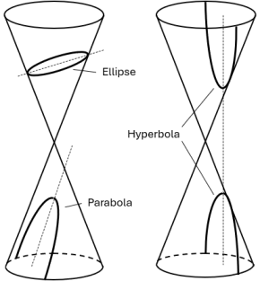
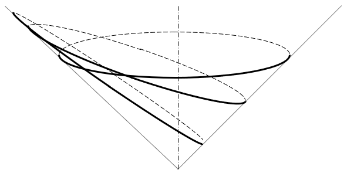
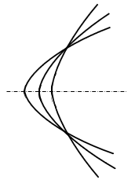

Astrodynamics — Original Research
One cone, three orbits
A unified geometric treatment of elliptical, parabolic, and hyperbolic orbits — derived from first principles, not stitched together from three separate classical toolkits.

Every orbit — bound, marginally escaping, or hyperbolic — is a conic section. Classical orbital mechanics treats these as related but separate cases, each with its own derivation. This site develops a single conical reference frame in which all three arise from the same construction, with a common set of relations connecting geometry to mechanics.
Who this is for
Whether you're a student building intuition for orbital geometry, an engineer who wants the mechanics without wading through the classical case-by-case derivations, or a fellow researcher checking the math — this site is built to be followed from first principles, with each result traceable back to the geometry that produces it.
Where to start
Background covers the published work this builds on. Framework introduces the conical reference frame itself. Elliptical Orbits and Hyperbolic Orbits summarize results for each family.

